Next: 7.3 Project 3: Destination
Up: 7. Compositing
Previous: 7.1 Project 1: Fish
7.2 Project 2: Through the Looking Glass
Blending modes, discussed in Chapter 5, are very
useful tools for compositing. They can be used to give the illusion
of one image element not just being delimited by another but of being
fused right into it. This is a very powerful device because it allows
the artist to convey a message about the relationship of the fused
images, which simple juxtaposition does not. The objective of the
project in this section is to illustrate this type of effect.
The images shown in Figures 7.7
Figure 7.7:
A Tin Can Discarded as Trash
| 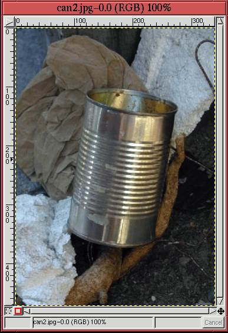 |
and 7.8
Figure 7.8:
A Flower and a Visiting Friend
| 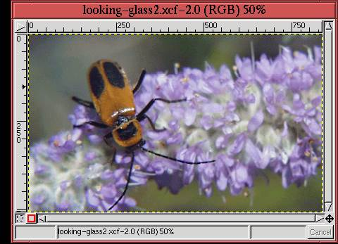 |
are the raw materials for this project. They will be fused together
to make the tin can seem to reflect the flower and insect. A summary
of the procedure used to achieve the effect is as follows:
- 1.
- Place the flower image into a new layer above the layer of the tin can
image.
- 2.
- Position, scale, and orient the flower layer to juxtapose it with the can
in the desired manner.
- 3.
- Mask the upper layer to the limits of the tin can's borders.
- 4.
- Apply an appropriate blending mode to the upper layer.
- 5.
- Adjust the upper layer's brightness using the Curves tool.
Figure 7.9
Figure 7.9:
The Flower Layer Pasted and Oriented over the Tin Can Layer
| 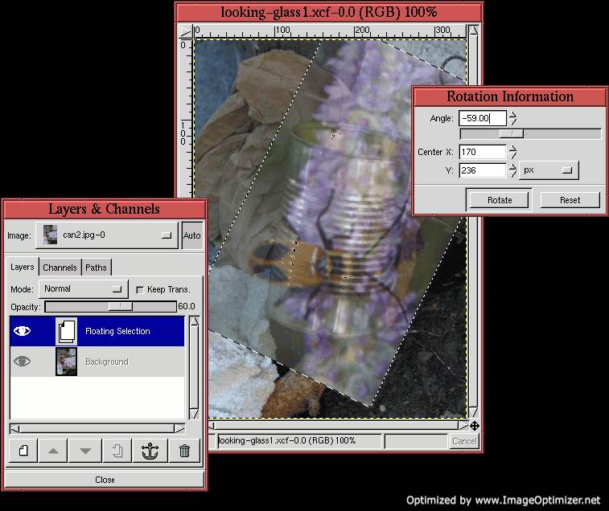 |
illustrates the flower copied and pasted into a layer over the tin can
image. As the Layers dialog in
Figure 7.9(a) indicates, the flower
layer is in a floating selection where it will stay until it is
positioned, scaled, and oriented. The Opacity slider in the Layers
dialog has been set to 60%, which allows the tin can to be seen
through this floating selection.
The Transform tool is used to rotate the flower layer. The
flower image is aligned with the longitudinal axis of the tin can,
which requires 59o of rotation. The partial transparency of the
floating selection is invaluable, while using the Move tool, for correctly positioning the flower
layer over the tin can. This is the stage of the project seen in
Figure 7.9(b).
Before moving to the next stage of the project, let's discuss how the
rotation value of -59.00, shown in
Figure 7.9(c), was determined. This
angle was computed using the Measure tool,
as is illustrated in Figure 7.10.
Figure 7.10:
Using the Measure Tool to Compute the Correct Angle of Rotation
| 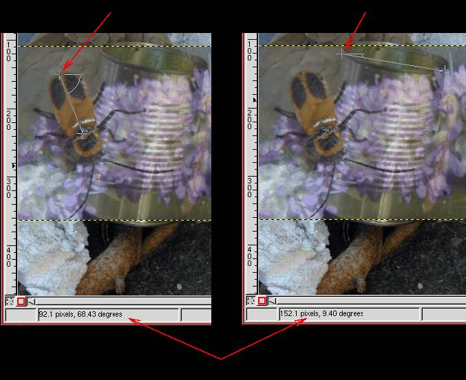 |
Figure 7.10(a) shows how the angle of
the longitudinal axis of the insect's back is measured, and
Figure 7.10(b) does the same for the
lateral axis of the tin can. As shown in the two figures, the
insect's back measures 68.43o with respect to the horizontal axis,
and the tin can measures 9.40o. To make the insect align with the
can after rotation requires
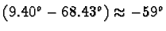.
An alternative technique to using the Measure tool to get an
accurate estimate of the amount of rotation needed is to make use of
the Path Transform Lock in the Paths dialog (see
Section 3.4.1). This feature locks a path to the
active layer so that when the layer is transformed with the Transform tool, the path is too.
Figures 7.11 and
7.12 illustrate how this helps.
Figure 7.11(a)
Figure 7.11:
Using a Bezier Path to Delineate the Insect's Outline, and
Toggling On the Path Transform Lock
| 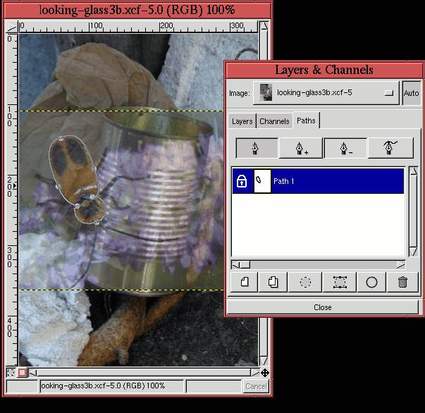 |
shows a Bezier path outlining the insect, and
Figure 7.11(b) shows that the Path
Transform Lock for this path is toggled on. In addition, the insect's
layer has been made partially transparent, allowing the tin can to be
seen through it from behind.
Figure 7.12(a)
Figure 7.12:
Bezier Path Outline Rotating with Transform Grid
| 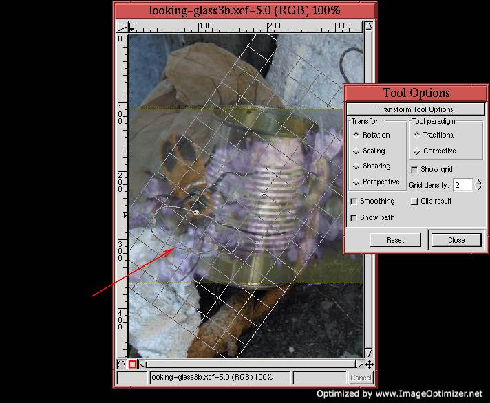 |
shows the Tool Options window for the
Transform tool. The Rotation radio button is shown checked,
and, take note, the Show Path checkbox is toggled on. This means that
the locked Bezier path will be shown with the transform grid lines
when the mouse is first clicked in the image window. An accurate
transformation of the insect layer can now be performed because the
locked path moves visibly with the grid lines as they are transformed
by the mouse.
Figure 7.12(b) shows the result of
rotating the grid lines, and it can be seen that the insect's outline
is also rotated. This is a very powerful technique for getting
accurate transforms. In particular, it is the only technique for
effectively visualizing how to warp one object to another when using
the Perspective option of the Transform tool.
Picking up the project from where we left off, the rotated floating
selection is now anchored to a new layer by clicking on the New
Layer button in the Layers dialog, and the Opacity slider is set back
to 100%. Before the next step, which is to mask the tin can, the
flower layer is merged into a transparent layer that has the same size
as that of the tin can. This is done as follows:
- 1.
- In the Layers dialog the New Layer button is clicked and the
Transparent layer option is chosen in the New Layer Options
dialog.
- 2.
- The resulting layer is positioned in the layer stack just below
the Flower layer.
- 3.
- With the flower layer active, the function Merge Down is
selected from the Layers menu (or C-S-m is typed in the Layers
dialog window). This merges the flower into the transparent layer.
At this point, it is useful to name the two layers in the Layers dialog.
Let's label them Flower and Tin Can.
The next step in the process is to create a mask of the tin can. This
is done by making a selection of the can, which is then converted to a
layer mask. To facilitate the selection, the visibility of the Flower
layer is toggled off. The selection is made using the Bezier
Path tool and is illustrated in
Figure 7.13.
Figure 7.13:
Making a Selection of the Tin Can
| 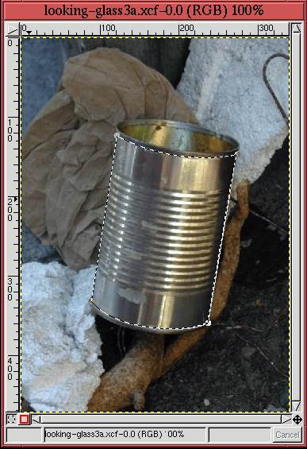 |
After toggling the visibility of the Flower layer back on and making
it active, the procedure for creating the layer mask from the
selection is performed using these steps:
- 1.
- Make the Flower layer active by clicking on its thumbnail in the
Layers dialog.
- 2.
- Create a layer mask for the Flower layer using the Add Layer
Mask function from the Layers menu,
choosing the White (Full Opacity) option.
- 3.
- Invert the selection by typing C-i in the image window.
- 4.
- Make the Active Background Color black by typing d and
then x in the image window.
- 5.
- Making sure the layer mask is active in the Layers dialog by clicking
on its thumbnail, and cut the selection by typing C-x in the
image window.
Cutting the selection makes the the layer mask black outside the tin
can's boundaries. Note that although the selection was made in the
Tin Can layer, the cut is applied to the layer mask. This illustrates
the important rule that regardless of where a selection is made, its
effect is only applied to the active layer.
Figure 7.14
Figure 7.14:
Flower Layer Masked by Tin Can
| 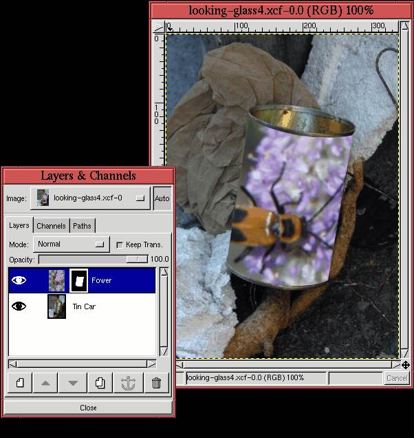 |
shows the result of creating the layer mask. The thumbnail of the
mask can be seen in Figure 7.14(a), and
its effect can be seen in
Figure 7.14(b). Notice that the parts
of the Flower layer extending outside of the boundaries of the tin can
have been masked off.
Figure 7.14(b) is almost what we are
looking for except that the flower image now looks is if it is pasted
onto the outer surface of the can. The effect we are looking for is
different. We want to make the flower look fused into the can, as if
it is an integral part of it. For example, it would be interesting
for the insect and flower to appear as if they were reflected off the
can's shiny surface. To achieve this effect, we use a blending mode.
The blending mode used in this example is Multiply
(Burn). It
is applied by making the Flower layer active and then selecting it
from the Mode menu in the Layers dialog. You can see the choice of
mode in Figure 7.15(a),
Figure 7.15:
Using the Multiply Blending Mode on the Flower Layer
| 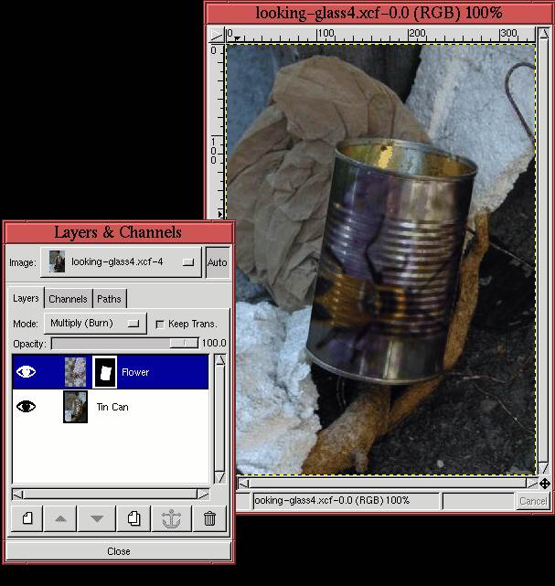 |
and you can see the result on the image in
Figure 7.15(b). This mode multiplies
the pixel values of the two layers, but only where the Flower layer is
not transparent. Thus, the lighting variations of the tin can are
impressed onto the flower and insect, making them look as if they are
truly a part of the can. The overall result, however, is a little
dark.
The final step, then, is to lighten the dark result in
Figure 7.15. This is done by applying
the perturbation technique described in
Section 6.2.5 to the Flower layer using the
Value channel of the Curves tool. The Value channel is selected
because we do not want to affect the colors, just the lightness of the
image. Figure 7.16(a)
Figure 7.16:
Final Composition
| 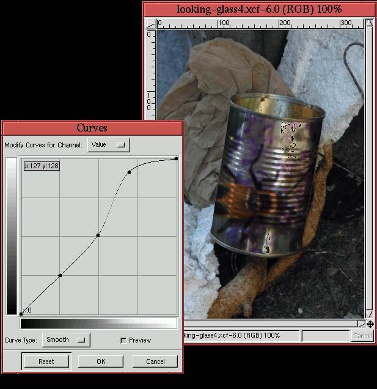 |
shows the Curves dialog after using the perturbation technique.
The resulting effect on the final composition is shown in
Figure 7.16(b). Using the
perturbation technique, it was determined that it was the highlight
part of the value range that needed to be lightened to obtain the best
result. Thus, this effect could not have been achieved using the Levels or Brightness-Contrast tools.
To summarize, this project illustrates the use of blending modes and
the Curves tool for compositing. Note that the use of the Multiply blending mode is not primordial to the technique. Other
possibilities could have been Screen, Overlay, Lighten Only, Darken Only, and Color. It is important to
experiment with the different modes and to do so in conjunction with
the Opacity slider and the Curves tool. The final choice will
depend on your aesthetic sensibilities.
Next: 7.3 Project 3: Destination
Up: 7. Compositing
Previous: 7.1 Project 1: Fish
©2000 Gimp-Savvy.com